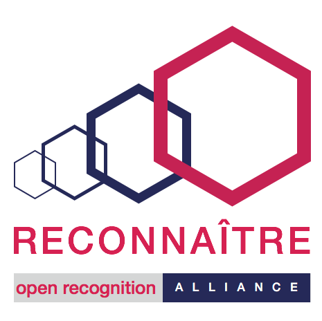
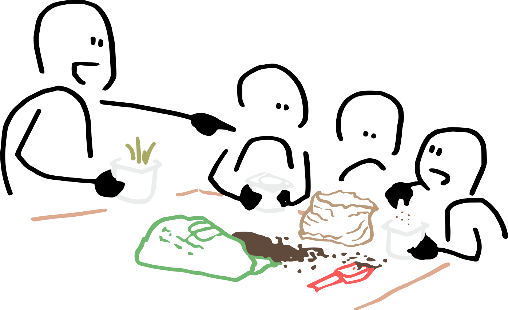

Réciprocité : Monnaie temps et OpenBadges¶
Une heure passée derrière le bar ne s'évapore pas. Une formation à la régie son laisse une trace. Un atelier compost co-animé avec Eisenia transforme quelque chose chez l'animateur·ice autant que chez le public. La question, c'est comment rendre tout ça visible sans le réduire à de l'argent. Deux outils différents nous y aident, et tous les deux sont sur la même carte TiBillet.
La monnaie temps¶
C'est l'outil le plus simple à comprendre. Une heure de bénévolat sur un chantier participatif vaut un point sur la carte du bénévole. Ce point peut être échangeable contre une consommation au bar, un repas, une heure d'atelier, ou un service rendu par une autre structure du réseau. La conversion est définie collectivement en assemblée. Une heure égale une heure, sauf si on choisit d'introduire des coefficients pour valoriser différemment certains types de chantier ou de service (sécurité incendie, formation longue, accompagnement social).
L'exemple de référence se trouve à La Raffinerie, à La Réunion. Dès la première année d'utilisation de la monnaie temps, 55 000 heures de bénévolat ont été valorisées lors des chantiers participatifs. Le simple passage à une monnaie convertible en boissons a fait passer le nombre de bénévoles d'une dizaine à une cinquantaine. Le mécanisme n'a pas été une variable d'ajustement de la trésorerie, il a été un dispositif de mise en circulation des présences, exactement comme le décrit la page d'accueil quand elle parle du bar comme dispositif pédagogique.
Pour l'Upop' Bar, on imagine plusieurs usages concrets. Quatre heures passées le samedi matin à équiper la cuisine avec Des Saveurs et des Ailes valent quatre points, échangeables le soir contre des consommations ou un repas. Une demi-journée d'animation d'un repair'café avec l'Atelier Soudé vaut son équivalent. Le serveur ou la serveuse bénévole d'une soirée comptabilise ses heures, qu'iel peut convertir en boisson, en place de concert, ou en rien si iel le décide. Personne n'invisibilise le travail de personne, mais personne ne tarife non plus.

Les OpenBadges¶
L'OpenBadge est une reconnaissance ouverte. Une image numérique attestant qu'une personne a participé à quelque chose, appris quelque chose, accompli quelque chose. Le standard technique vient des Mozilla Open Badges (2011), mais le sens politique a été retravaillé en France par Serge Ravet et l'association Reconnaitre (Open Recognition Alliance).
Code Commun fabrique le projet openbadge.coop. L'idée pour l'Upop' Bar est de commencer modestement. Un badge « Hôte de tiers-lieu » pour les bénévoles qui ont suivi la formation courte à l'accueil. Un badge « Régisseur·euse junior » pour celles et ceux qui ont assuré la régie de trois concerts. Un badge « Animateur·ice arpentage » pour la méthode héritée de Peuple et Culture, transmise par La Méandre. Ces badges suivent la personne, pas le bar. Iels peuvent être présentés dans un parcours scolaire, professionnel, associatif, ou pas, c'est au choix de la personne.
Pourquoi les deux sur la même carte¶
La monnaie temps fait circuler la valeur matériellement (je donne une heure, je reçois une consommation). L'OpenBadge fait circuler la reconnaissance symboliquement (je participe, donc on me reconnaît dans une posture, et cette reconnaissance me suit). Les deux mécanismes ne se confondent pas, mais ils s'articulent sur le même support technique : la carte TiBillet, qui agrège l'adhésion, les billets, les recharges, la monnaie temps et bientôt les badges associés au profil.
Ça permet une chose simple : un bénévole peut, en un scan, montrer ce qu'il a fait dans le lieu, ce qu'il y a accumulé en valorisation, et ce qu'il y a appris. Pas pour qu'on le note, pour qu'il en garde une mémoire active et qu'il puisse la partager.
Ce que ça change politiquement¶
Cette double mécanique inscrit le bar dans un effort plus large : sortir du paradigme capitaliste qui transforme toute relation en marchandise, sans pour autant tomber dans le mythe du « tout gratuit » qui invisibilise le travail. C'est précisément ce que Cascade.coop formule en disant que la contribution peut être monétaire ou non monétaire, et que les deux doivent cohabiter sur un pied d'égalité fonctionnelle.
Une réserve quand même, posée clairement par le HCVA dans son avis du 18 avril 2024 : il ne faut pas confondre la méthode avec l'objectif. Valoriser le bénévolat sur une carte ne doit pas devenir une obligation administrative qui transforme l'engagement en mesure. La monnaie temps et l'OpenBadge sont des outils. Les utiliser doit rester un choix de la personne, jamais une contrainte du collectif.
Sources et références¶
Sur les Open Badges et la reconnaissance ouverte : reconnaitre.openrecognition.org, l'association Reconnaitre. openbadge.coop pour la plateforme libre fabriquée par Code Commun. openbadgeinfo.fr pour le panorama d'usages en France et le Forum francophone des Open Badges.
Sur le statut juridique du bénévolat : HCVA, avis du 18 avril 2024 et le portail associations.gouv.fr. Sur le cadre conceptuel : Cascade.coop, Comprendre le modèle Cascade, en particulier la section sur la contribution plurielle.